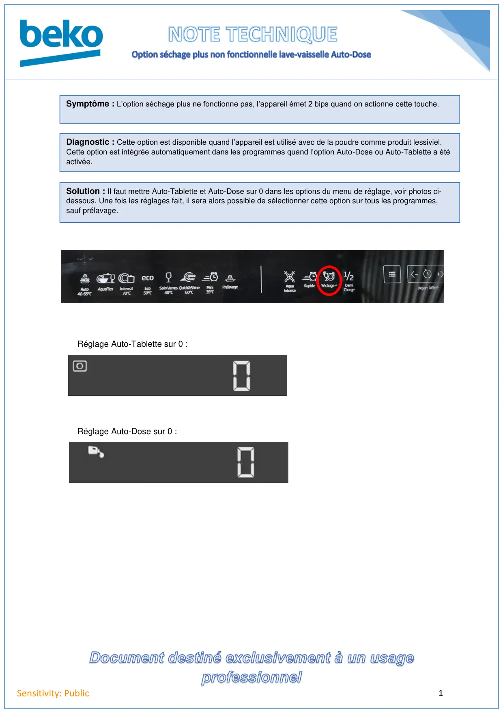

Fonction séchage + lave vaisselle AutoDose

1Sensitivity: PublicSymptôme : L’option séchage plus ne fonctionne pas, l’appareil émet 2 bips quand on actionne cette touche.Diagnostic : Cette option est disponible quand l’appareil est utilisé avec de la poudre comme produit lessiviel.Cette option est intégrée automatiquement dans les programmes quand l’option Auto-Dose ou Auto-Tablette a étéactivée.Solution : Il faut mettre Auto-Tablette et Auto-Dose sur 0 dans les options du menu de réglage, voir photos ci-dessous. Une fois les réglages fait, il sera alors possible de sélectionner cette option sur tous les programmes,sauf prélavage.Réglage Auto-Tablette sur 0 :Réglage Auto-Dose sur 0 :
1 / 1